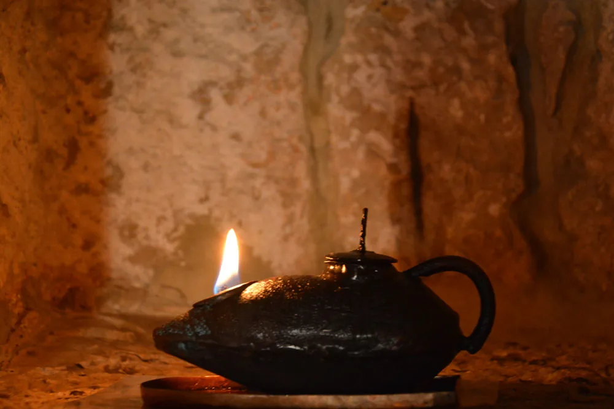

Some prayers travel from phone to phone and heart to heart because people love them. This small library gathers a few of the most loved - a modern Marian prayer, traditional prayers from the Lebanese mountains, and Brazil's Rosary of Battle - each with its text, its named source, and an honest label. The Lebanese mountain prayers are published as an excerpt while the transcription is completed.

The oil lamp at Saint Charbel's hermitage in Annaya - a small flame for every prayer said in the quiet.
An Honest Word About "Secret" Prayers
No prayer is a secret formula, and no prayer mechanically guarantees an outcome. God is not unlocked by the right words in the right order. What people mean when they call a prayer "powerful" is usually simpler and truer: this prayer helped someone ask honestly, and they kept praying it. That is worth sharing.
So every prayer here carries a label. Traditional prayers are named as traditional. Modern devotional prayers are named as modern. Sources are credited and linked, and where a Church text exists in a standard translation, we use it. If a devotion is ever reported to promise a guaranteed result, read the label first - we do not make that promise, and neither does the Church's tradition.
The Prayers
Three devotions people keep sharing - each on its own page with its text and source.
A modern Marian prayer asking the Mother of God to walk ahead of you into what you cannot solve - every closed door, every difficult conversation, every fear. It ends with the traditional Hail Mary. Shared by Catholic Prayer on Instagram, credited on the page.
Popular prayers handed down in the mountain villages of Akoura, Tannourine, and Bsharri - the Lebanon of Saint Charbel - in the original Arabic with labeled translations. Published as an excerpt while the full text is transcribed; we do not guess at missing lines. Shared by Anthony El Hachem, credited on the page.
A modern popular Brazilian devotion prayed on a standard rosary - not the official Dominican Rosary - asking God for strength and courage in a struggle. Portuguese text with labeled translations. Shared by Adrines Kölln, credited on the page.
Every prayer on this site - traditional, Maronite, and for specific needs - each with its purpose, how and when to pray it, its source, and honest labels on every claimed promise.
How to Pray Anything on This Site
Ask, don't bargain
Prayer is a relationship, not a transaction. Bring the intention honestly and leave the outcome to God - that is the shape of every traditional prayer on this site.
Read the label first
Each page says what kind of prayer it is - traditional, modern devotional, or original - and who shared it. Traditional prayers carry the Church's long memory; modern ones carry the enthusiasm of the people sharing them.
Pray with the Church
Devotions are strongest inside the ordinary life of prayer: Mass, the Rosary, the novena, the psalms. A loved devotion is a door into that life, never a replacement for it.
Keep the doctors and the deadlines
Pray for healing and keep the doctors. Pray about the problem and make the phone call. The tradition anoints with faith and acts with prudence - never one without the other.